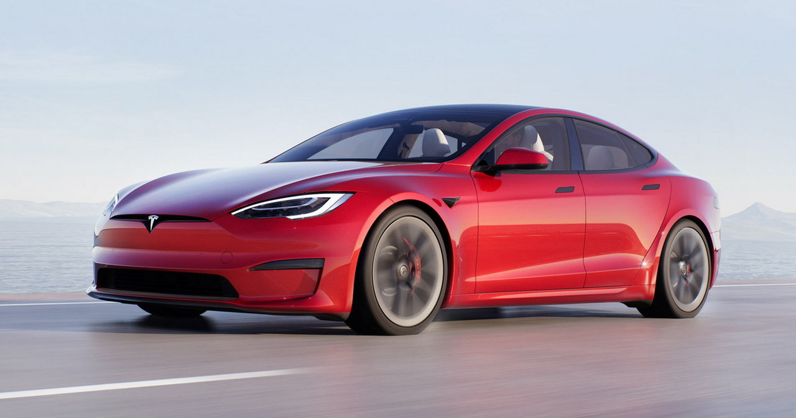
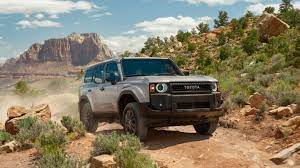
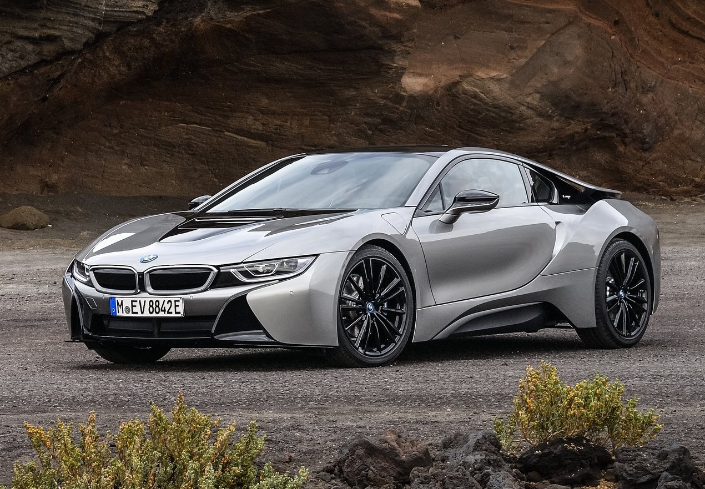

Tesla Model S to luksusowy, elektryczny sedan,
który zrewolucjonizował rynek pojazdów elektrycznych.
Zaprezentowany po raz pierwszy w 2012 roku, stał się symbolem nowoczesnej technologii i wydajności.
Model S wyróżnia się eleganckim i aerodynamicznym wyglądem oraz minimalistycznym wnętrzem,
które jest zdominowane przez ogromny ekran dotykowy na konsoli środkowej.
Dzięki zaawansowanym akumulatorom, Model S oferuje imponujący zasięg,
sięgający nawet 650 km w zależności od wersji. Najmocniejsze wersje,
jak Model S Plaid, osiągają przyspieszenie od 0 do 100 km/h w niecałe 2 sekundy,
co czyni go jednym z najszybszych seryjnych samochodów na świecie.

Ford Mustang to kultowy amerykański muscle car, który jest produkowany od 1964 roku.
To jedno z najbardziej rozpoznawalnych aut sportowych na świecie,
które łączy w sobie potężny silnik, agresywny wygląd i charakterystyczny ryk wydechu.
Mustang przeszedł wiele zmian w ciągu lat, ale zachował swój charakter.
Najnowsze wersje są dostępne zarówno z klasycznym silnikiem V8,
jak i bardziej ekonomicznymi jednostkami EcoBoost.
Samochód ten oferuje doskonałe osiągi, a także nowoczesne technologie,
takie jak zaawansowane systemy multimedialne i asystentów kierowcy.
Ford Mustang to auto, które dostarcza niezapomnianych wrażeń z jazdy
i jest symbolem wolności na drodze.

Toyota Land Cruiser to jeden z najbardziej wytrzymałych i niezawodnych samochodów terenowych na świecie.
Produkowany od 1951 roku, zdobył reputację auta,
które radzi sobie w najtrudniejszych warunkach, od pustyń po górzyste szlaki.
Nowoczesne wersje Land Cruisera łączą luksusowe wnętrze z legendarnymi możliwościami terenowymi.
Wyposażony w potężny silnik i zaawansowany napęd 4x4,
Land Cruiser może pokonać trudne przeszkody i jest preferowany przez off-roadowych
entuzjastów oraz profesjonalistów pracujących w wymagających środowiskach.
Mimo swojej masywnej konstrukcji, wnętrze auta jest niezwykle komfortowe,
z wysokiej klasy materiałami i nowoczesną elektroniką.

BMW i8 to futurystyczny, hybrydowy samochód sportowy, który łączy w sobie nowoczesny design i
zaawansowaną technologię. Wprowadzony na rynek w 2014 roku,
i8 szybko zdobył uznanie za swoje innowacyjne podejście do ekologicznych pojazdów sportowych.
Auto napędzane jest przez połączenie trzycylindrowego silnika benzynowego z tyłu oraz
elektrycznego silnika z przodu, co pozwala na dynamiczne przyspieszenie i niskie zużycie paliwa.
Charakterystyczne drzwi otwierające się do góry oraz smukła
linia nadwozia nadają mu niezwykły wygląd. Wnętrze BMW i8 jest pełne zaawansowanych technologii,
w tym cyfrowych ekranów i ekologicznych materiałów. To auto idealne dla osób
ceniących sobie zarówno sportowe osiągi, jak i troskę o środowisko.